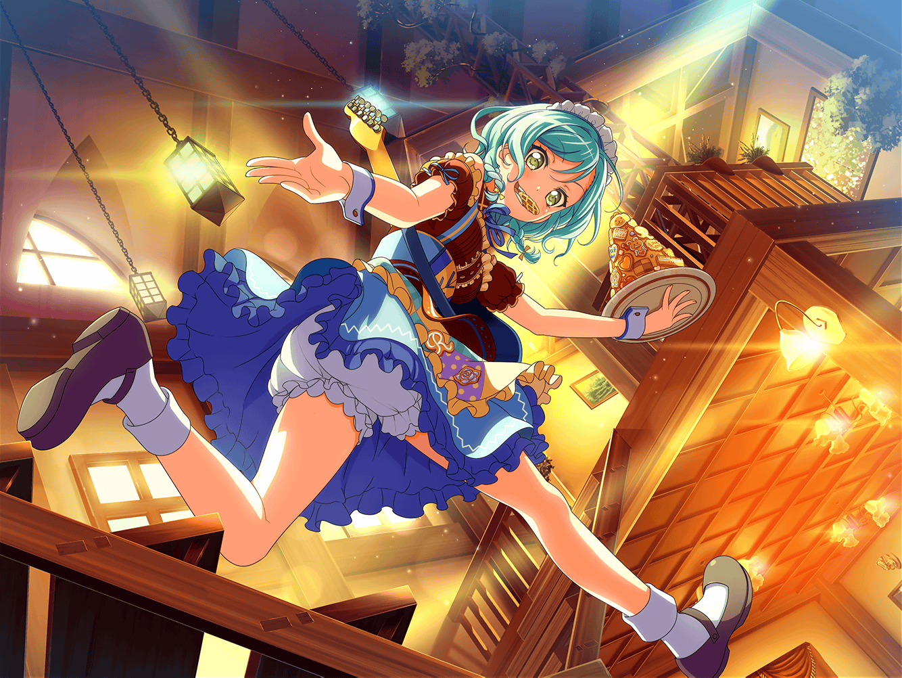

江戸川楽器店
日菜
ふふ～ん♪
お、このピックなんだかるんっ♪ ってきた！
日菜
買っちゃおうかなぁ～♪
日菜
あ、どうせならおねーちゃんのも買って
お揃いっていうのも……
日菜
お揃いにしたら
おねーちゃん、喜んでくれるかな～？
日菜
……って、あれ？
{{userName}}さん！
日菜
こんなところで会うなんて奇遇だね？
楽器でも見に来たの？
日菜
機材の受け取りに来たんだ～。
ん、あたし？
日菜
あたしは、バンド練習の帰りに
るんっ♪ ってしたから寄ってみたの！
日菜
あたしを呼んでいたのは
このかわいいピックだったんだけどね♪
日菜
あっ、そうだ！
{{userName}}さん、手を出して！
日菜
怖い物じゃないから大丈夫だよ～。
ほらほら、手を出して！
日菜
はい、手作りクッキー！
日菜
{{userName}}さんにはいつもお世話になってるから
あげるねー♪
日菜
あたしの手作りクッキーがもらえるなんて
ラッキーだねー、{{userName}}さん♪
日菜
あ、ちなみに味は大丈夫だよー。
今日、練習の時にパスパレのメンバーにあげたけど
すっごく美味しいって言ってもらえたし♪
日菜
え？
このクッキーはねー……
日菜
この間、おねーちゃんに作り方を教わって
一緒に作ったんだ～♪
日菜
最初はちょっと失敗しちゃったんだけど
おねーちゃんがもう１回付き合ってくれて
２回目で上手く作れたんだよ！
日菜
え、い、１回目のやつが失敗した理由？
そ、それはその……
日菜
ふ、深い理由があるんだよ！
うん！ あまり細かいことを気にしちゃだめだよ！
日菜
うっ……
まさか今の発言でわかっちゃったの……
日菜
ちょーっと、大雑把にやりすぎちゃったんだよね～。
あはは……
日菜
あたしはなんとなくでやっちゃうことが多いし、
いつもそれでできちゃうからさー……
おねーちゃんはやっぱりしっかりしてたなあ
日菜
ひとつひとつの材料の分量を、
ちゃーんと量ってたしね♪
日菜
そう考えると、
あたしとおねーちゃんってバランスいいよねー
日菜
大雑把ときっちり……うん！
やっぱりバランスいい♪
日菜
おねーちゃんも加減が大事って言ってたし
ふたりで力を合わせたら最強かもっ！
日菜
{{userName}}さんはどう思う？
日菜
お互い、足りないところを補えるような関係……
日菜
あっ、そうだね！
{{userName}}さんが言うような関係になれたら
すっごく嬉しいな♪
日菜
ねぇ、{{userName}}さん……
日菜
あたしね、おねーちゃんはどう思うかわからないけど、
それでもね……
日菜
あたしに足りない部分はおねーちゃんに助けてほしいし、
おねーちゃんに足りない部分はあたしが……
日菜
誰でもない、あたし自身が……
力になってあげたいの！
日菜
だって、あたし……
おねーちゃんのこと、大好きだから♪
日菜
あたしとおねーちゃん
いつかはそういう関係になれたりするのかな？
日菜
ふふ、{{userName}}さんは優しいね
ありがとう♪
日菜
{{userName}}さんがそう言ってくれたからかな？
なんだか、なれそうな気がしてきたよ♪
日菜
うーん、でも
おねーちゃんに足りない部分なんてあるのかなぁ？
日菜
あたしにとっておねーちゃんは
誰よりも完璧だからねっ！
日菜
ふむふむ……
{{userName}}さんから見たら
足りない部分はあるんだ？
日菜
じゃあ、あとはあたしがそれを探し出して
そこを助けてあげればいいんだね！
日菜
うんっ！
{{userName}}さんも応援していてね！
日菜
あ、もうこんな時間！
それじゃ、またね、{{userName}}さん！
日菜
あたしとおねーちゃんで作ったクッキー
味わって食べてねー！